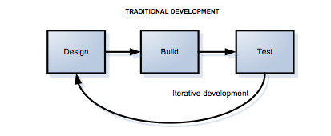

Technical Blog
Test Driven
5/31/2014
Test driven programming, does have it's advantages, but it seems very strange to first create a test and then base the code on the results expected from the test. Since high school, my code has always been driven by achieving a result. Like many others, I am used to being given a prompt and then, writing code in an attempt to try to achieve a certain outcome.

Basing the code on the prompt I feel personally allows for more creativity, but if a program were to be test driven, I can see how it can limit a lot of problems, as well as force programmers to create code that will accommodate what the client or manager wants. I personally feel at the moment that there are more disadvantages, and this could be because I am still unfamiliar with test driven coding. One obvious advantage at first glance is that test driven development saves a lot of time as you start winding down and finishing the development. Most of the bugs are worked out towards the end since test are runned from the very start. As for disadvantages, it can also be time consuming in the infancy phase of any project, complex cases are harder to account for unless you consider them from the start. It would take a very creative mind to account for many of the cases. Design of the program could also be difficult since the design will be based on the test, and if modification of a test becomes necessary, this could change the entire program. Over all I prefer the freedom of designing a program around a problem, rather than a specific test.
